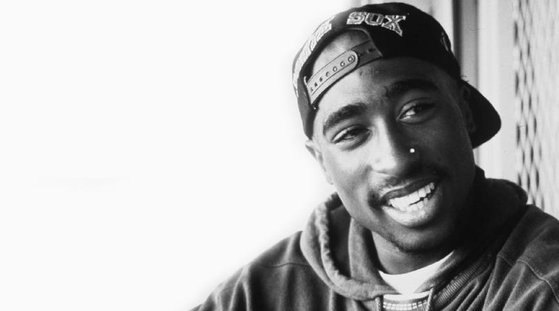

Tupac

Nacimiento:Tupac Amaru Shakur también conocido como 2Pac, simplemente Tupac, fue un rapero y actor estadounidense. Es considerado por muchos como uno de los raperos más importantes de todos los tiempos, y más influyentes de la historia del rap.
16 de junio de 1971, El Barrio, Nueva York
Datos del asesinato:13 de septiembre de 1996, University Medical Center,
Cónyuge:Keisha Morris (m. 1995–1996)
Youtube: